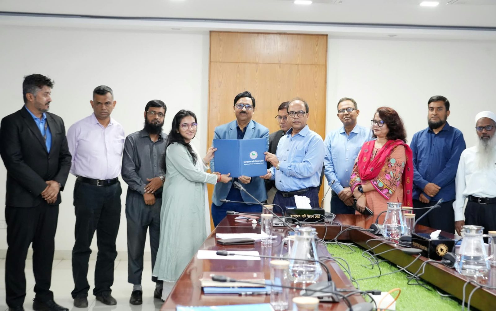
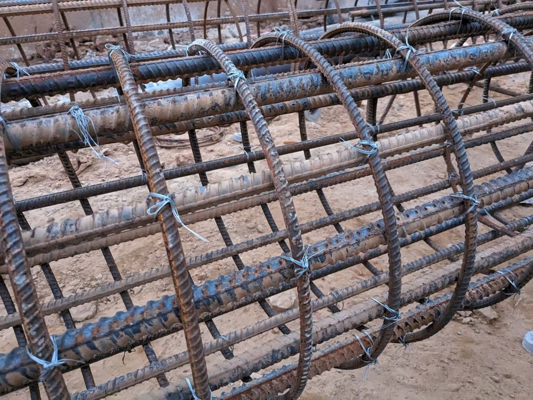
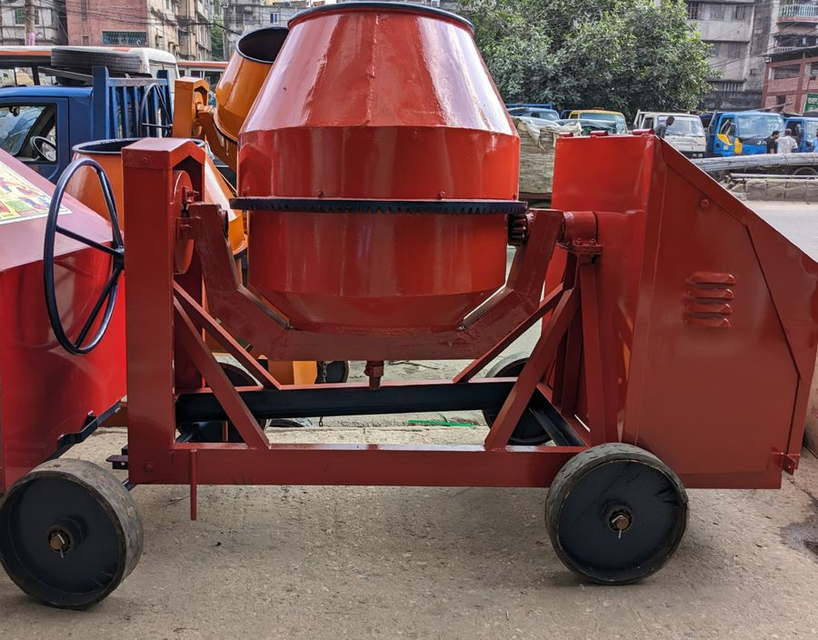

Computational hydrology
Physically based rainfall–runoff and hydrodynamic modelling of river basins and floodplains.
Open to PhD positions
Water Resources Engineer · Hydro-Climate & Geospatial Machine-Learning Researcher
I couple physically based hydrological–hydrodynamic models (HEC-HMS, HEC-RAS 2D) with remote sensing and explainable machine learning to understand how river basins respond to climate change, and to map flood hazard where it matters most.
01 — About
I am an undergraduate researcher in Water Resources Engineering at the Bangladesh University of Engineering and Technology (BUET) with a quantitative foundation spanning surface-water hydrology, hydro-climate modelling, CMIP6-driven climate-impact assessment, flood susceptibility and inundation modelling, optical remote sensing, and data-driven environmental modelling.
My work bridges physically based simulation with data-driven learning: I use HEC-HMS and HEC-RAS 2D to represent basin processes, and Random Forest and XGBoost to characterise flood hazard, land-cover transformation and climate-induced hydrological variability, with careful attention to data leakage, spatial validation and reproducibility.
Bangladesh sits at the confluence of three of the world's great river systems, which makes it one of the most instructive places on Earth to study floods. I am seeking a PhD position advancing computational hydrology, climate-resilient water-resources planning, and remote-sensing–machine-learning integration for flood-risk science.
02 — Research
Physically based rainfall–runoff and hydrodynamic modelling of river basins and floodplains.
Susceptibility, hazard and inundation mapping to support flood-risk decisions.
CMIP6 downscaling and bias correction to project streamflow across SSP scenarios.
Landsat and Sentinel analytics for hydro-climatic and environmental monitoring.
Ensemble learning for hydrology with rigorous validation and interpretability.
Land-surface-temperature dynamics and vegetation loss in rapidly urbanising regions.
2022 – 2026
Bangladesh University of Engineering and Technology (BUET), Dhaka · CGPA 3.39 / 4.00
Undergraduate thesis Flood Susceptibility Mapping of the Surma River Basin Using Machine Learning and Multi-Source Remote Sensing — supervised by Dr. Nasreen Jahan
Relevant coursework
03 — Experience
Flood Susceptibility Mapping, Surma River Basin · Dept. of WRE, BUET · Supervisor: Dr. Nasreen Jahan
Bangladesh Water Development Board (BWDB) · Dhaka

Urban Vegetation & Land-Surface-Temperature Dynamics · Dhaka District
04 — Projects
A reproducible geospatial-ML framework that turns multi-source satellite data and terrain attributes into basin-scale flood susceptibility maps for a trans-boundary river system.
Co-author
Co-author
A team field study (Group 3) that surveyed Dhaka markets — Hatirpul, Nawabpur, Dholaikhal, Keraniganj, Dhanmondi-2, Gabtoli and BUET — for floor tiles, water pumps, admixture machines, RCC piling, stone chips and labour, then costed a 1,250 sq ft, five-storey house against Public Works Department rates.
Values in Bangladeshi taka (৳), from the project's overall-analysis table.
≈ 34% lower actual market cost than schedule rates overall. RCC piling and stone were the two items where market prices exceeded PWD rates.


05 — Publications
Kundu, A., Metu, M., Atique, M. M. H., Siam, N. S., & Sajid, S. (2024). Assessment of the change of vegetation cover and its impact on land surface temperature of Dhaka district using ArcGIS. IUT Journal of Engineering and Technology (JET), 19(3), 33–43.
Kundu, A., et al. Climate-change impact on streamflow of the Khowai River Basin under CMIP6 scenarios using HEC-HMS. International Conference on Advances in Civil Engineering (ICACE) 2026. Co-author.
Kundu, A., et al. Evaluation of structural flood-mitigation strategies in the Sylhet region using HEC-RAS 2D hydrodynamic modelling. International Conference on Advances in Civil Engineering (ICACE) 2026. Co-author.
06 — Skills
07 — Recognition
Selected among the top eight teams for competitive problem-solving, innovation-oriented thinking and communication of applied technical solutions.
Secured a place at Bangladesh's most competitive engineering university through the national admission examination.
A perfect 170/170 in Quantitative Reasoning and 148/170 in Verbal Reasoning, reflecting a strong quantitative foundation for computational hydrology and machine-learning research.
Slices show each score's position on the official 130–170 GRE scale.
08 — Contact
I am looking for a PhD position in computational hydrology, climate-resilient water-resources planning and remote-sensing–ML for flood-risk science. Referees are available on request, including my thesis supervisor Dr. Nasreen Jahan (BUET).